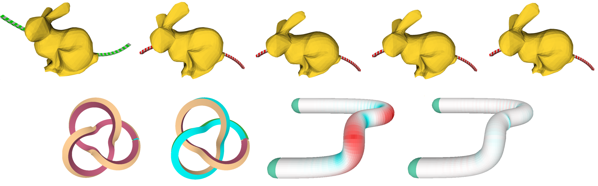
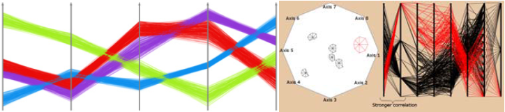
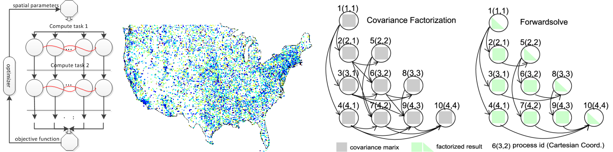

Shape Transformation BibTex
Fleshing: Spine Bending with Local Volume Preservation
Deformation with local volume preservation is characterized by a transformation with constant unit Jacobian determinant everywhere. We exploit this constraint and derive three closed-form solutions, Radial, Normal and Binormal, that give stylized locally volume-preserving deformation driven by a 3D curve. We present Fleshing as the general deformation framework that implements these solutions and use normal-propagated frame with the unbending-transfer-bending technique to solve the twist problems in skinning with the Frenet frame. In addition to meshes, Fleshing can operate on any shape topology (point cloud, offset surfaces or cell complexes).
EVA: Curvature-based Offsets with Even Volume/Area
Common shape modeling operations such as subdivision, smoothing, bending can incur significant volume loss or uneven volume distribution. Existing volume compensation techniques based on relaxation often introduce nonlinear computational overhead and may cause uncertainty in determining the compensated shape. To address this issue, we develop EVA, a shape modeling application that solves the local and global versions of the Minkowski-Steiner formular, 2π⁄3gh3+ mh2+h= ΔV⁄A, for precise area and volume control and machining with constant material removal rate.
Multivariate Data Visualization BibTex
Visual Analytic Tools in Parallel Coordinates
We address the occlusion problem in Parallel Coordinates using color diffusion and propose visual analytic tools that lay out and draw clusters/glyphs based on their correlations with each other and with the data dimension, providing both Dimension Reduction and Details-on-Demand through views and interaction.
Large-scale Spatial Analysis BibTex
Distributed Spatial Analysis in R
We investigate the problem of fitting statistical models to large spatial datasets. The process of fitting a model involves efficient computation of likelihoods. A variance-minimized solution of the problem requires linear solve and cholesky decomposition, for which the parallel implementation has nontrivial dependencies. We examine two modes of parallelization: multi-threaded (within single node) and distributed (across multiple nodes). On a single node, we used the multi-threaded BLAS implementation to achieve significant performance gain over the single threaded implementation. For a cluster of compute nodes, we implemented a distributed likelihood algorithm using RMPI. The resulting experients on Carver utilize all available cores on a single node, as well as multiple nodes on the cluster.